Types of Quantum Gates
Note
Installation Required: This functionality requires MATLAB Support Package for Quantum Computing.
This topic provides a list of functions that you can use to create quantum gates in MATLAB®. Quantum gates are the building blocks of quantum circuits, and they enable you to program algorithms for a quantum computer. Quantum gates are reversible and have unitary matrix representations.
Creation Functions for SimpleGate Objects
Gates on One Target Qubit
| Creation Function | Gate Name | No. of Qubits | Matrix Representation | Properties |
|---|---|---|---|---|
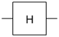hGate
| Hadamard gate | 1 |
| |
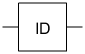idGate | Identity gate | 1 |
| |
 xGate | Pauli X gate | 1 |
| |
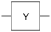yGate | Pauli Y gate | 1 |
| |
 zGate | Pauli Z gate | 1 |
|
Rotation Gates
| Creation Function | Gate Name | No. of Qubits | Matrix Representation | Properties |
|---|---|---|---|---|
 rxGate | x-axis rotation gate | 1 |
| |
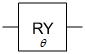ryGate | y-axis rotation gate | 1 |
| |
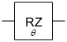rzGate | z-axis rotation gate | 1 |
| |
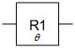r1Gate | z-axis rotation gate with global phase | 1 |
| |
sGate | S gate | 1 | ||
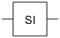siGate | Inverse S gate | 1 | ||
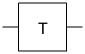tGate | T gate | 1 | ||
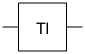tiGate | Inverse T gate | 1 |
Gates with One Control Qubit and One Target Qubit
| Creation Function | Gate Name | No. of Qubits | Matrix Representation | Properties |
|---|---|---|---|---|
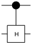chGate
| Controlled Hadamard gate | 2 |
| |
| Controlled X or CNOT gate | 2 |
| ||
cyGate | Controlled Y gate | 2 |
| |
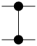czGate | Controlled Z gate | 2 |
|
Gate That Swap States of Two Qubits
| Creation Function | Gate Name | No. of Qubits | Matrix Representation | Properties |
|---|---|---|---|---|
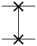swapGate | Swap gate | 2 |
|
Controlled Rotation Gates
| Creation Function | Gate Name | No. of Qubits | Matrix Representation | Properties |
|---|---|---|---|---|
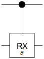crxGate | Controlled x-axis rotation gate | 2 |
| |
 cryGate | Controlled y-axis rotation gate | 2 |
| |
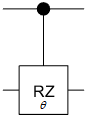crzGate | Controlled z-axis rotation gate | 2 |
| |
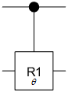cr1Gate | Controlled z-axis rotation gate with global phase | 2 |
|
Controlled Controlled X Gate
| Creation Function | Gate Name | No. of Qubits | Matrix Representation | Properties |
|---|---|---|---|---|
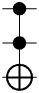ccxGate | Controlled controlled X gate (CCNOT or Toffoli gate) | 3 |
|
Ising Coupling Gates
| Creation Function | Gate Name | No. of Qubits | Matrix Representation | Properties |
|---|---|---|---|---|
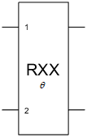rxxGate | Ising XX coupling gate | 2 |
| |
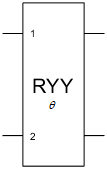ryyGate | Ising YY coupling gate | 2 |
| |
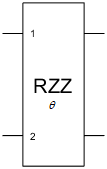rzzGate | Ising ZZ coupling gate | 2 |
|
Creation Functions for CompositeGate Objects
Composite and Specialized Gates
| Creation Function | Gate Name | No. of Qubits | Gate Symbol | Equivalent Internal Gates | Matrix Representation |
|---|---|---|---|---|---|
compositeGate | Composite gate | Varies | Example:
Quantum circuit with two composite gates named | ||
| 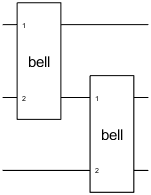 | 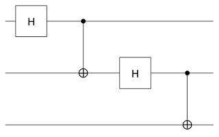 |
| |||
qftGate | Quantum Fourier transform (QFT) gate | Varies | Example: Quantum Fourier transform gate on three qubits. The equivalent internal gates are Hadamard gates, R1 gates, and a swap gate. | ||
| 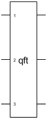 | 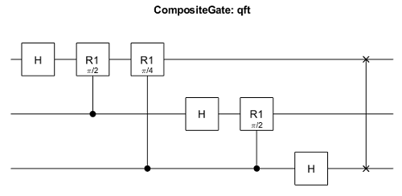 |
| |||
initGate | Initialization gate | Varies | Example: Initialization gate on three target qubits. The equivalent internal gates are inverse uniform controlled y-axis rotation gates. | ||
| 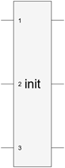 | 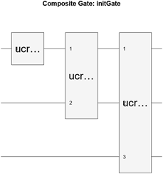 | initGate applies a matrix U such
that , where is the vector representation of the input state. | |||
unitaryGate | Unitary matrix gate | Varies | Example: Unitary matrix gate on three target qubits. The equivalent internal gates are four unitary matrix gates alternating between two uniform controlled z-axis rotation gates and one uniform controlled y-axis rotation gate. | ||
| 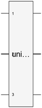 |  | unitaryGate applies the unitary matrix to the target
qubits (up to global phase). | |||
mcxGate | Multi-controlled X gate | Varies | Example: Multi-controlled X gate with three control qubits, one target qubit, and no ancilla qubit. The equivalent internal gates are Hadamard gates, controlled R1 gates, and controlled X gates. | ||
| 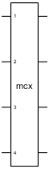 | 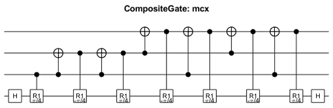 |
| |||
Uniformly Controlled Rotation Gates
| Creation Function | Gate Name | No. of Qubits | Gate Symbol | Equivalent Internal Gates | Matrix Representation |
|---|---|---|---|---|---|
ucrxGate | Uniformly controlled x-axis rotation gate | Varies | Example: Uniformly controlled x-axis rotation gate with one control qubit and one target qubit using rotation angle vector . The equivalent internal gates are x-axis rotation gates and controlled Z gates. | ||
| 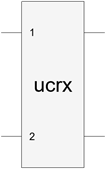 | 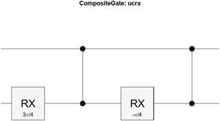 |
| |||
ucryGate | Uniformly controlled y-axis rotation gate | Varies | Example: Uniformly controlled y-axis rotation gate with one control qubit and one target qubit using rotation angle vector . The equivalent internal gates are y-axis rotation gates and controlled X gates. | ||
| 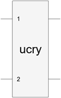 |
| ||||
ucrzGate | Uniformly controlled z-axis rotation gate | Varies | Example: Uniformly controlled z-axis rotation gate with one control qubit and one target qubit using rotation angle vector . The equivalent internal gates are z-axis rotation gates and controlled X gates. | ||
| 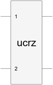 | 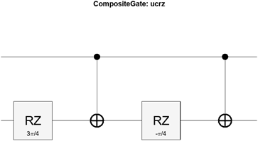 |
| |||
See Also
quantum.gate.SimpleGate | quantum.gate.CompositeGate